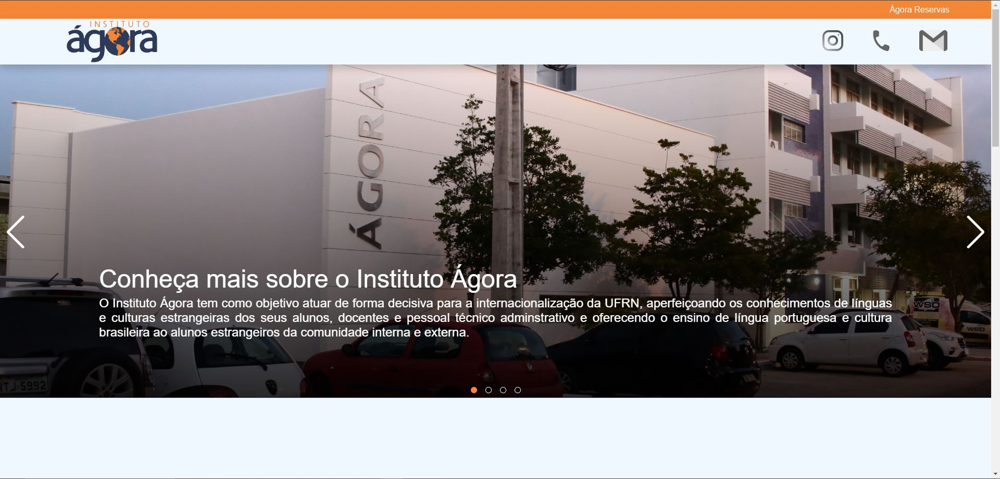
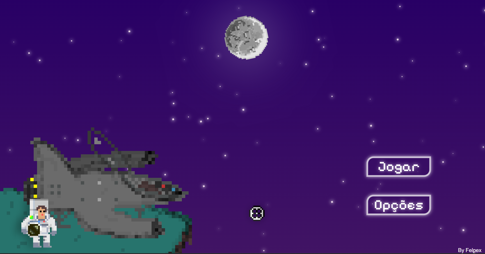

Desenvolvedor
Front-End JavaScript
Olá! Me chamo Felipe Costa e sou um dev com foco no Front-End. Tenho 22 anos e desde criança sempre tive a curiosidade de saber como um site funcionava, como que "magicamente" as coisas funcionavam no meu computador. Estou no 6 período de Ciências e Tecnologia pela UFRN, e próximo semestre (2025.1) devo iniciar Engenharia da Computação.


Sobre mim
Além disso, estou neste semestre (2024.2) cursando o quarto módulo de inglês pelo Instituto Ágora (Correspondendo ao nível A2 do Quadro Comum Europeu). Me interessei pela área após estudar JavaScript na faculdade e desde então passei a estudar por conta própria, me aprofundando na linguagem, em suas bibliotecas como a do React e em alguns frameworks como Angular.

Conheça os meus projetos
Site para o Instituto Ágora
Ainda em desenvolvimento!
Um site simples, ainda em desenvolvimento, inicialmente apenas para que o usuário tenha acesso a informações sobre os cursos ofertados pela instituição, além de ter acesso aos editais lançados pela mesma, também é possível usá-lo para entrar em contato com a secretaria do Instituto.

Jogo usando JS
Ainda em desenvolvimento!
Eu desenvolvi este joguinho como projeto final da disciplina de Lógica de Programação da faculdade, mas decidi refazer o projeto do zero, pois desenvolvi muito conhecimento, e visitar o código antigo, fez eu me sentir na obrigação de melhorá-lo.
